Climate, Farming and Migration:
Dynamic Livelihoods in the Nepali Tarai
Pre-submission presentation
23 October 2015
Presenter:
Asheshwor Shrestha
asheshworman.shrestha@adelaide.edu.au,
PhD Candidate,
Principal supervisor:
Dr. Douglas Bardsley
douglas.bardsley@adelaide.edu.au,
Senior Lecturer,
Co-supervisor:
Dr. Dianne Rudd
dianne.rudd@adelaide.edu.au,
Senior Lecturer,
Geography, Environment & Population,
The University of Adelaide
Outline
- Context of the research
- Theory
- Methodology and methods
- Findings
- Implications
Research dissemination
- Conference presentation - East-West Center 13th International Graduate Students’ Conference, February 2013
- Post-field presentation for GEP Monday Seminar, May 2014
- GEP Monday Seminar presentation, August 2014
- NCCARF Climate Futures conference - Gold Coast, October 2014
- Climate Change and Human Mobility workshop presentation - ANU, Canberra, March 2015
- Planned: Adelaide Uni GEP conference - November 2015
1. Context of the research
- The Tarai has a history of dealing with environmontal and socio-economic challanges
- Additional challanges due to environmental change
- Finding ways in which the environment and the people adapt
- Contribution
- planned adaptation to increase resilience
- establishes mobility as a form of adaptation
- assesses the climatic impact in the Tarai using daily records and compares with local perception
Study locations
Study sites
Background on Nepali plains - the Tarai
- Tarai has been a destination of in-migrants moving from the hills since the 1960s (Gurung, 1989; Kansakar, 1985)
- Tarai has also witnessed massive socio-ecological change
- Forest clearing and malaria eradication
- Agricultural extensification to feed the nation
- Urbanization
- Tarai is also seen as a region neglected by the central government (Majumdar, 2006); marginalized communities have been left out of the decision making process in resource management including community forestry (Gauli & Rishi, 2004)
- Shares open border with India
Background on Nepali plains - the Tarai
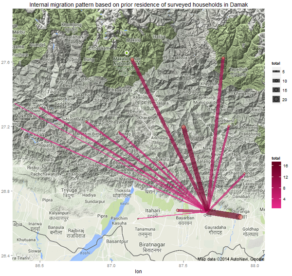Historic internal migration pattern based on prior residenceMap usage subject to Google Maps API Terms of Service (http://developers.google.com/maps/terms)
Household characteristics
| Damak | Dhangadhi | |
| Sample households | 143 | 151 |
| Total households | 3,989 | 4,624 |
| Total population in selected wards | 15,909 | 25,726 |
| Mean age: respondents; respondents' family | 45.15; 34.11 | 39.6; 25.62 |
| Gender distribution | M 75.5%; F 24.5% | M 43.0%; F 57.0% |
| Livestock ownership | 68.53% | 96.69% |
| Involvement in agriculture | 77.62% | 90.07% |
| HH with migrant worker | 49.65% | 56.28% |
| HH w/ flood experience | 49.65% | 56.29% |
| HH's median land area in sq. m. | 6,773 | 4,741 |
| Median household size | 5 | 6 |
| Indigenous % | 17 | 25 |
2. Theoretical conceptualizations
- Vulnerability, adaptation and resilience
- Reflexive modernization in the Tarai
Adaptation interface framework
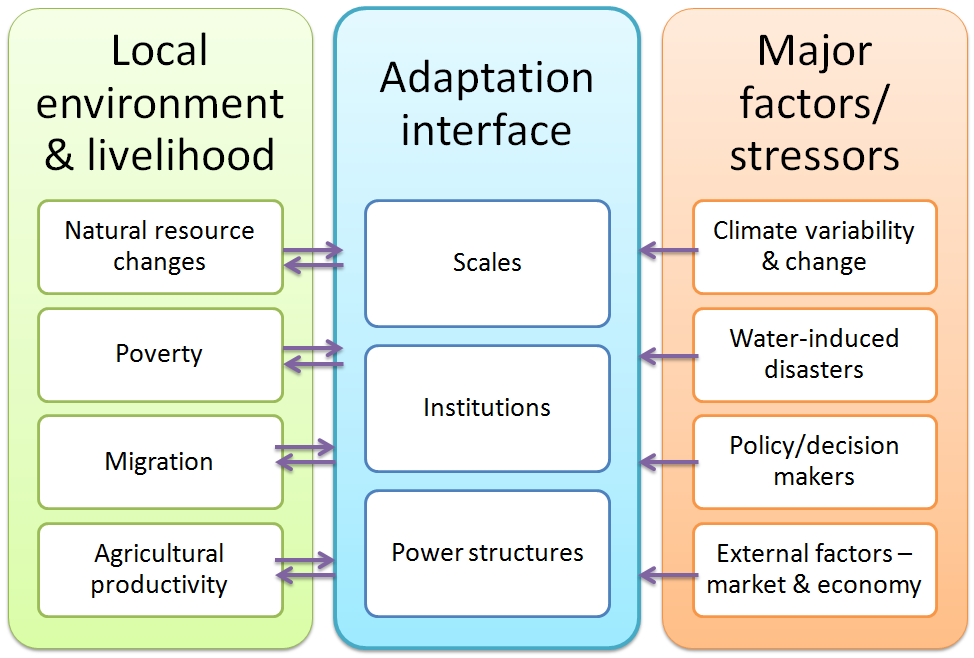adapted from Mbow et al. (2008)
Reflexive modernization in the Tarai
- Beck’s (1992) reflexive modernization theory illustrates how individuals will increasingly become aware of the risks associated with modernization, question expert opinions, respond to risks, and join movements to push forward new priorities and policies
- it is clear from the action of the farmers that they are actively changing their practices by utilizing national and international networks
- can be seen as the signs of a transition in process - transition from modernity towards reflexive modernity
3. Methodology and methods
- Research framework utilizing both quantitative and qualitative tools
- Unit of analysis
- Sample selection and data analysis
Overall framework of the research
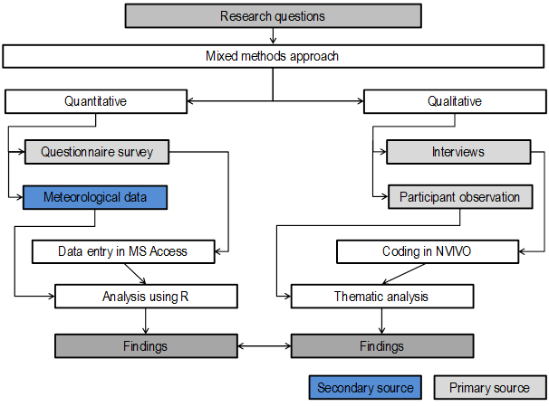Unit of analysis
- Case study/comparative study - Municapility/wards
- Questionnaire survey – demographic details; socioeconomic details; livelihood strategies; motivation for livelihood strategies - Household
- Perception of changes in climatic variables and environmental resource indicators - Individual
Sample selection
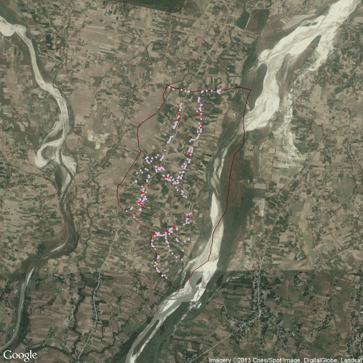4. Perception and impacts
- Perception of climate change
- Perception of trends in agricultural output
- In-situ adaptation examples
Perception of impact from changes in climatic variables
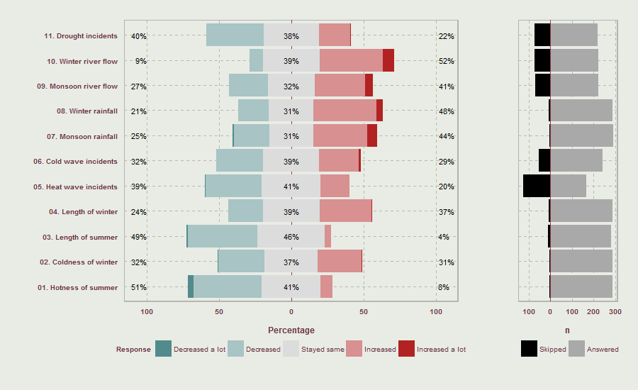Perception of changes in eleven climatic variables
Perception of impact from changes in climatic variables
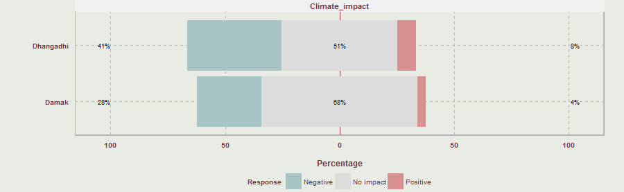In Damak, the perceptions were significantly related to respondents' prior experience with flood χ2(2, N = 143) = 6.6206, p = 0.04
Trends in rainfall
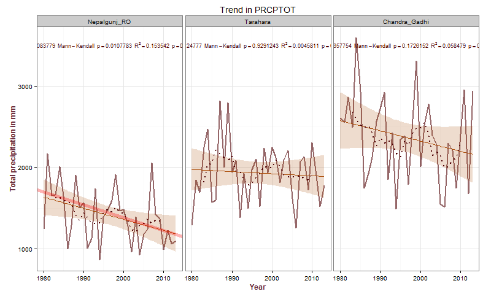Trend in annual total precipitation (PREPTOT) in three stations
For Nepalgunj RO, Mann Kendall p = 0.0108, Kendall's Tau =-0.3084
, Sen's slope = -15.8
Rainfall variability

Inter-annual variability in mean monthly rainfall in Tarahara Station (1971 - 2012 aggregate)
Flash floods
- Sediment deposit on the field was the most reported problem from floods
- No mechanism for compensation when land is lost
- Only 18 respondents had received any form of relief
- No insurance mechanism
Rainfall variability during monsoon
- Monsoon onset day:
any rainy day after 1st June with total rainfall of three consecutive days exceeding 30 mm. A day is counted as a rainy day if there is a rainfall of at least 0.85 mm - Dry spell days:
at least 7 consecutive days of no rainfall after commencement of monsoon - Successful plantation days:
no dry-spell days in 30 days after the monsoon onset date (Karmacharya 2010)
Monsoon onset day and dry spell days
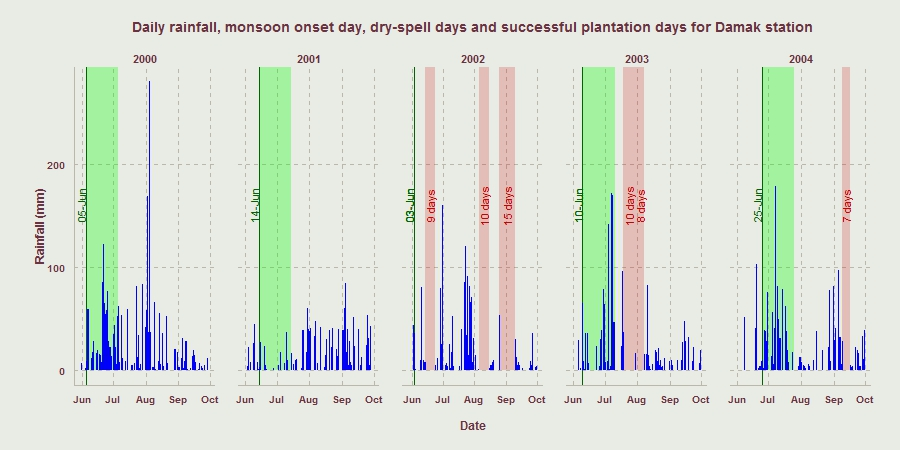Dry spell days, monsoon onset day and successful plantation day for Damak station for years 2000 to 2004
53% respondents had experienced drought in the last 5-7 years
Monsoon onset day and dry spell days
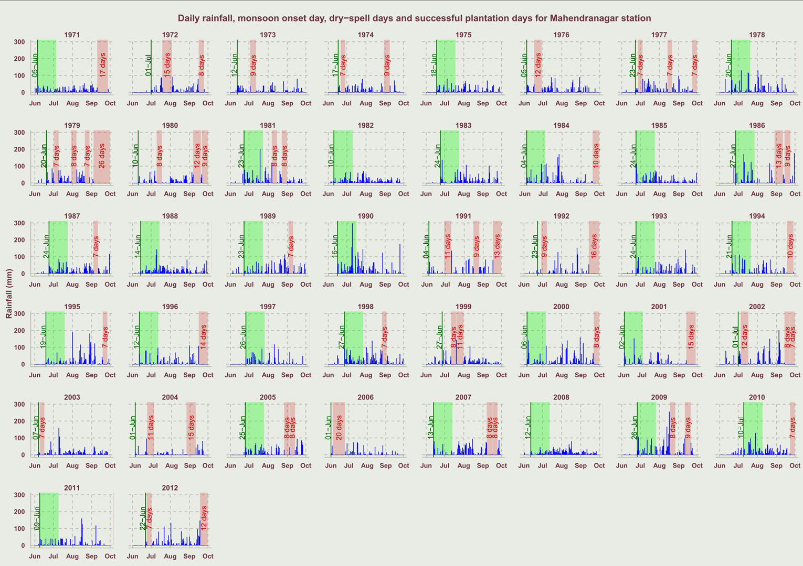Cropping calendar
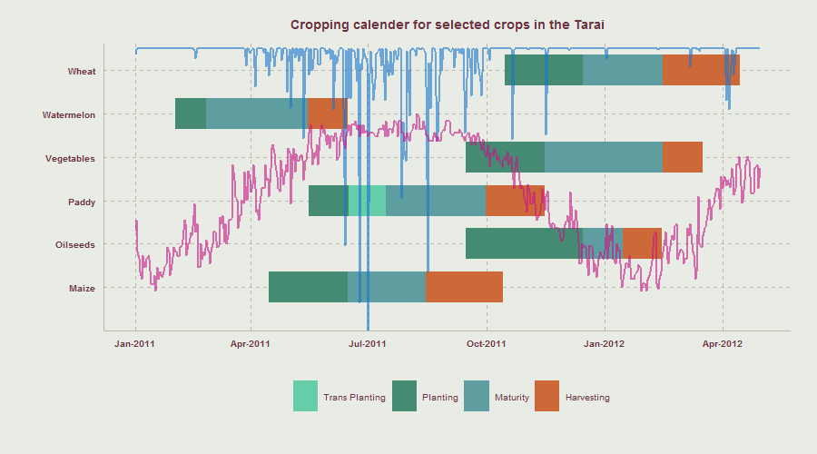Cropping calendar for major crops in Tarai showing daily rainfall (blue) and daily minimum temperature (magenta)
Perception of trends in agricultural output
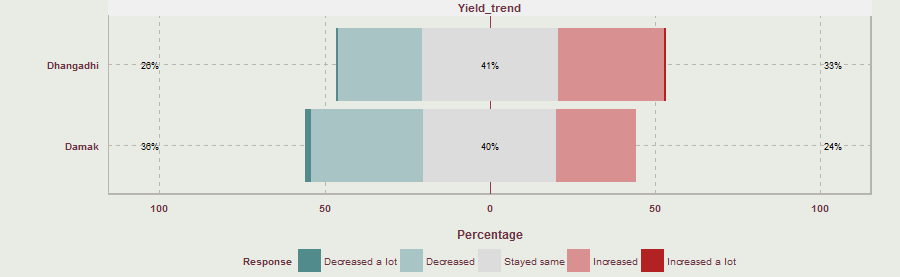The respones were not significantly related with respondents' prior experience with flood or, with respondents' family having a migrant member or not
Climate impact and agricultural yield
"Rainfall has become untimely. It does not rain during plantation time"
(12 respondents in questionnaire survey)
"The canals dried because of drought. We do not have private irrigation pump so we rely on rainfall."
(female-57 from Damak, 17 Dec 2013)
"We get more output now but it's also costly due to [chemical] fertilizers."
(4 respondents from questionnaire survey)
5. Negiotating livelihoods in the Tarai
- Resillient livelihoods maintained through
- Coping
- In-situ adaptation
- Ex-situ adaptation
Coping and adaptation
"Nothing can be done."
(6 respondents in questionnaire survey)
"When the field was dry, land owner accused me of not working hard enough. Pump set is not available when needed."
(female-25 from Dhangadhi, 3 Feb 2014)
"Rainfall is the best [for paddy]. Pumped water do not contain nutrients."
(female-33 from Dhangadhi, 3 Feb 2014)
In-situ adaptation examples
- Farming of high value crops along the river banks when it is dry
- Requires constant safeguard
- No legal entitlement
- Prone to flooding
In-situ adaptation examples
- Procuring fodder and firewood
- Forests in the Tarai are highly protected now compared to in the past when it used to be a common pool resource
- Not all families can afford the payment and have resorted to fetching firewood from across the border
- During flooding period, locals collect trees and branches brought by the flood.
In-situ adaptation examples
- Hiring paid labour for agriculture
- Labour from outside of the family needed
- Upfront investment for planting, transplanting and harvesting labour
Agricultural infrastructure
- Irrigation system: only small percentage with access to canals, and the structure has not been properly maintained
- Electricity: supply is not constant, up to 18 hours per day load shedding
- Cost barrier: cost of pump, cost of bore hole, cost of fuel, cost of pipe and cost of labour
- Only 3 respondents out of 294 had started harvesting a new crop in the last 5 years
6. Human mobility and resilience in the Tarai
- Contemporary destinations
- Demographics
- Migrant households' narratives
- Migration characteristics
Contemporary destinations for migrant workers
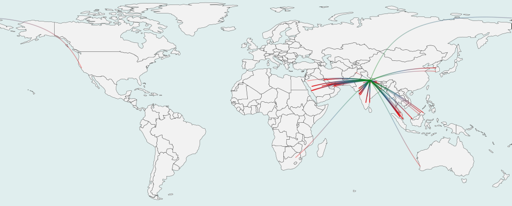Destination regions of migrant members from surveyed households
one arc represents one migrant from surveyed households
Migrant Households' narratives
- Economic reasons - inadequate income from local jobs
- Adhiya system of land tenure by which the poor or the landless use farmlands and pay half of the produce in return
- Farm income does not enable households to accure assets, remittance on the other hand, if successful yields much higher earnings
Choice of destinations of migrants from surveyed households
| Damak | Dhangadhi | |
| India | 3 | 101 |
| Middle East | 60 | 5 |
| Internal (within Nepal) | 5 | 18 |
| South East Asia | 32 | 7 |
| Other | 6 | 1 |
Migrants' age, education and years in foreign employment
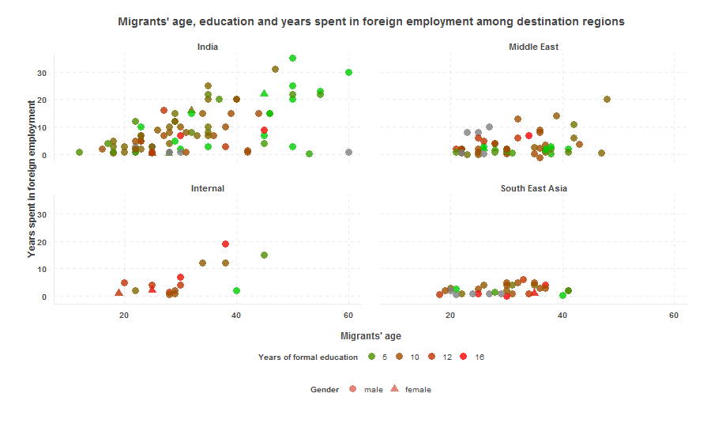SE Asia, especially Malaysia has become the destination of choice for most migrants from the Tarai
Formal education of migrants
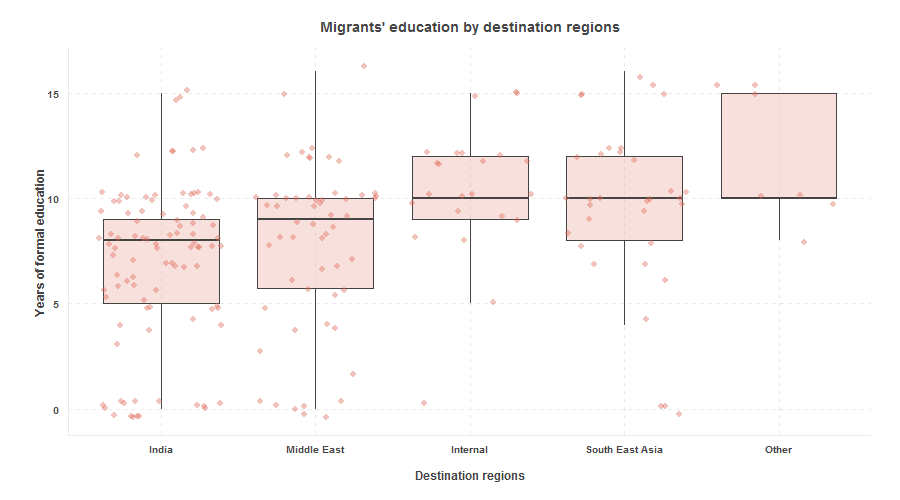Migrants to new international destinations have higher median education
Remittances by destination
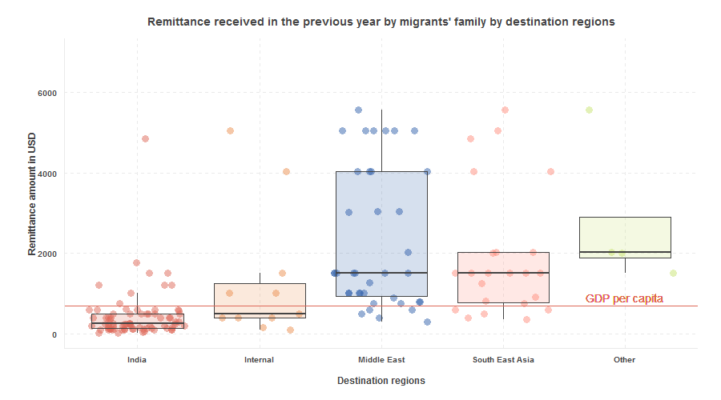Remittances from new international destinations are significantly more than from traditional destinations. National GPD per capita for 2013 was USD 694 (World Bank, 2014)
Use of remittances
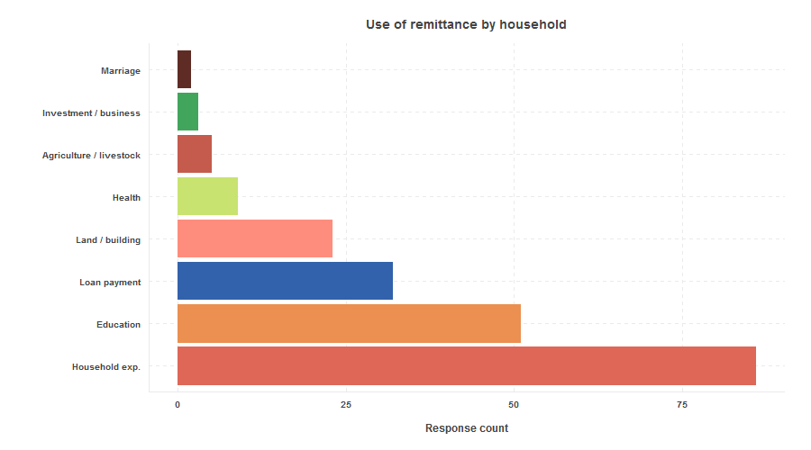For most families, remittance is an essential income source for household activities
7. Implications and summary of findings
- This study combines the physical evidence on environmental changes with the perception of such changes - this could be a framework for understanding and planning for adaptation
- This research establishes migration as a vital form of adaptation for Tarai farmers which should be mainstreamed into state policies.
- By tapping on the trans-local network, the resilience of migrants' household and the community is expected to be strengthened
Findings summary
- There is no significant decline in cultivation in migrants' households as the remaining members continute farming and livestock practice
- Labour migration opportunities remain the most important factor in household decision making. Low winter rainfall and failure of irrigation systems prompted some farmer to leave land fallow during the winter of 2013/14
- Migrants going to India and the Middle East have significantly lower formal education compared to internal migrants and migrants going to new destinations in SE Asia. This agrees with findings from Findlay (2011) and Massey et al. (1993)
Findings summary
- Tarai’s agricultural system has been under stress for decades from the environment and its inability to modernize
- In a continual attempt to seek for new ways to adapt, farmers look for on-farm and, off-farm solutions which are increasingly becoming global
- The popularity of international destinations disagrees with the theories that most of the environmental change initiated movements will be within national/regional boundaries (Findlay, 2011) perhaps because to the established international networks and any pressure due to environmental change simply reinforces these.
- Since the use of remittances for basic household activities and the fact that remittance income is disproportionately larger than income made at home, the trend in foreign employment is expected to continue
8. Limitations and future directions
- Climate data analysis was limited to three decades
- The analysis could include government policies and plans
Discussion
Questions / comments
Slides: asheshwor.github.io/phdpresub
Slides pdf: asheshwor.github.io/phdpresub?print-pdf
Press key for references, acknowledements and attributions
References - yet to update!!!
- Bardsley, D. K. 2014, 'Limits to adaptation or a second modernity? Responses to climate change risk in the context of failing socio-ecosystems, Environmental Development & Sustainability, DIO 10.1007/s10668-014-9541-x
- Black, R, Bennett, SRG, Thomas, SM & Beddington, JR 2011, 'Migration as adaptation', Nature Climate Change, vol. 478.
- Black, R, Kniveton, D & Schmidt-Verkerk, K 2011, 'Migration and climate change: towards and integrated assessment of sensitivity', Environment and Planning A, vol. 73, pp. 431-450.
- Findlay, AM 2011, 'Migrant destinations in an era of environmental change', Global Environmental Change, vol. 2011.
- Gauli, K & Rishi, P 2004, 'Do the marginalised class really participate in community forestry? A case study from western Terai region of Nepal', Forests Trees and Livelihoods, vol. 14, no. 2-4
- Gurung, H. (1989). Regional Patterns of Migration in Nepal. Hawaii, USA: East-West Center.
- Kansakar, V. B. S. (1985). Land resettlement policy as a population distribution strategy in Nepal. In L. A. Kosinski & K. M. Elahi (Eds.), Population redistribution and development in South Asia. Dordrecht, Holland: D. Reidel Publisihing Company.
- Karmacharya, J 2010, Exploring daily rainfall data to investigate evidence of climate change in Kathmandu Valley and its implication in rice farming in the area, Ministry of Agriculture, Kathmandu, Nepal.
- Majumdar, M 2006, 'धनी ठाऊँ, गरिब अर्थतन्त्र (Rich place, poor economy)', in M Mainali & B Thapa (eds), मधेस: समस्या र संभावना (Madhesh: challanges and opportunities), Social Science Baha, Himal Association, Lalitpur, Nepal, pp. 29-40.
- Massey, DS, Arango, J, Hugo, G, Kouaouci, A, Pellegrino, A & Taylor, JE 1993, 'Theories of International Migration: A Review and Appraisal', Population Council, vol. 19, no. 3, pp. 431-466.
- World Bank 2014, 'World Bank development indicators', URL: http://data.worldbank.org/indicator/NY.GDP.PCAP.CD/countries accessed 3-08-2014
Acknowledgements
- Field-work funding from Department of Geography, Environment & Population, The University of Adelaide
- Field research assistants Shreekrishna Chaudhary and Sujan Ranjitkar
- Local contact persons - Umesh Dhimal, Tejpal Dhimal, Laxmi Niraula and Kanchan Ojha
- Special thanks to Damak Municipality, Dhangadhi Municipality, Mercycorps Nepal, ADF Nepal Pvt. Ltd., and Neeraj Dangol
Attributions
- Slide framework: Reveal.js
- Fonts: Google fonts and Font Awesome
- Study location map data for Damak and Dhangadhi: Department of Survey, Kathmandu, Nepal
- Study location map data background: MapBox
- Internal migration pattern map: ggmap R package and Google Maps API
- World map shape file: Natural Earth
- Location of cities used for drawing arcs on world map: GeoNames